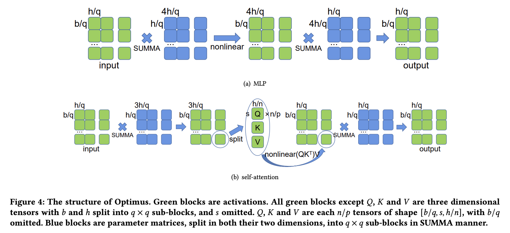

2D parallel (SUMMA) algorithm
Contents
2D parallel (SUMMA) algorithm¶
Authors: Kichang Yang, Kevin Ko

The use of 1D tensor parallelism can lead to high memory consumption in large-scale models because it does not partition activations. To address this issue, a more efficient 2D tensor parallelism algorithm based on SUMMA was introduced. This algorithm evenly distributes computation and memory load. For instance, when computing a linear layer Y = XA, the input X and weight A are split into four sub-matrices and the calculation is done in two steps, broadcasting rows and columns of X and A in turn. The result is a matrix Y that is the product of X and A.
Usage¶
Use ParallelMode.TENSOR_2D as a parameter of tensor_parallel_mode.
Also, you should input tp_depth to 1.
(tp_depth is a parameter only for 2.5D tensor parallelism)
from oslo import ParallelContext
from oslo.torch.nn.parallel import TensorParallel
tp_size = 4
tp_depth = 1
parallel_context = ParallelContext.from_torch(
data_parallel_size=1,
pipeline_parallel_size=1,
tensor_parallel_size=tp_size,
tensor_parallel_mode=ParallelMode.TENSOR_2D,
)
model = TensorParallel(model, parallel_context)
oslo.ready(model, parallel_context)